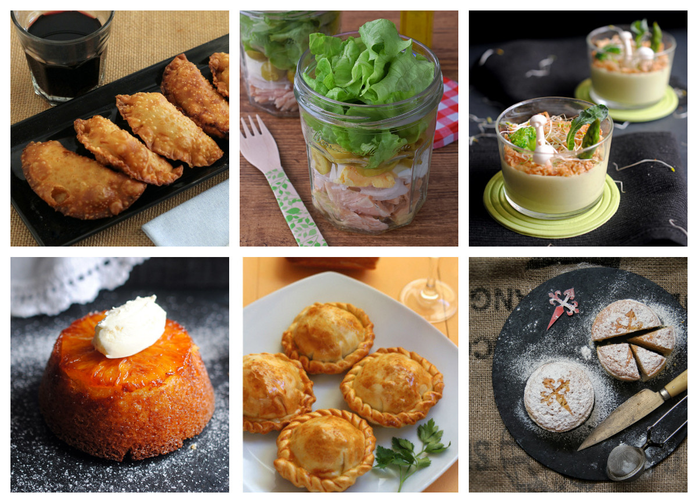

Un poco de Nosotros
En Recetas Faciles, nuestra misión es hacer que la cocina diaria sea divertida. Creemos firmemente que
cocinar es clave para que las personas, las comunidades y el planeta tengan una vida más sana y más
feliz. Empoderamos a los que cada día cocinan desde casa en cualquier parte del mundo para que entre
todos nos ayudemos, compartiendo recetas y trucos de cocina.
Praparate Para Cocinar
Si estás buscando nuevas combinaciones y crear menús diferentes para tus días, te traemos una selección con las mejores recetas para cocinar, deleitar tu paladar y darle un sazón diferente a tu vida.
No importa si te gusta la cocina oriental, occidental o mediterránea, en este listado de recetas, encontrarás el menú perfecto para tus días, con recetas únicas, deliciosas y divertidas para demostrar tus habilidades culinarias.
Desde principiantes hasta cocina avanzada encuentra platillos adaptados a tus gustos y capacidades, con tutoriales paso a paso para que no tengas ningún problema. ¡Colócate tu gorro, delantal y afila tus cuchillos porque comenzamos!
Correo Electronico :
Nombre de Usuario :
Nombre de Receta :
Fecha de Comentario :
Enviar